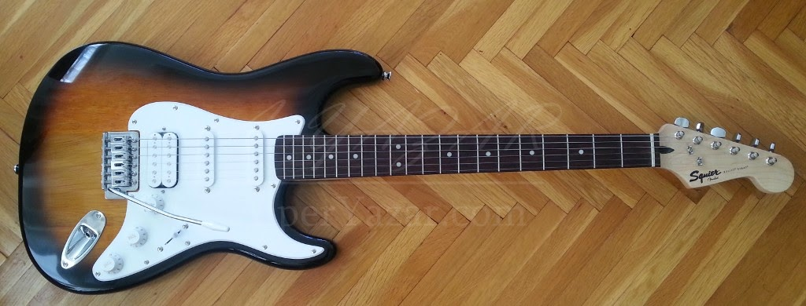
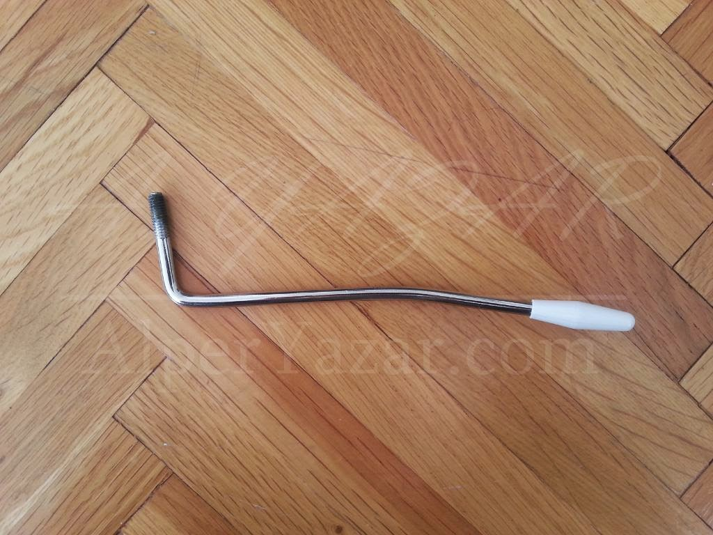
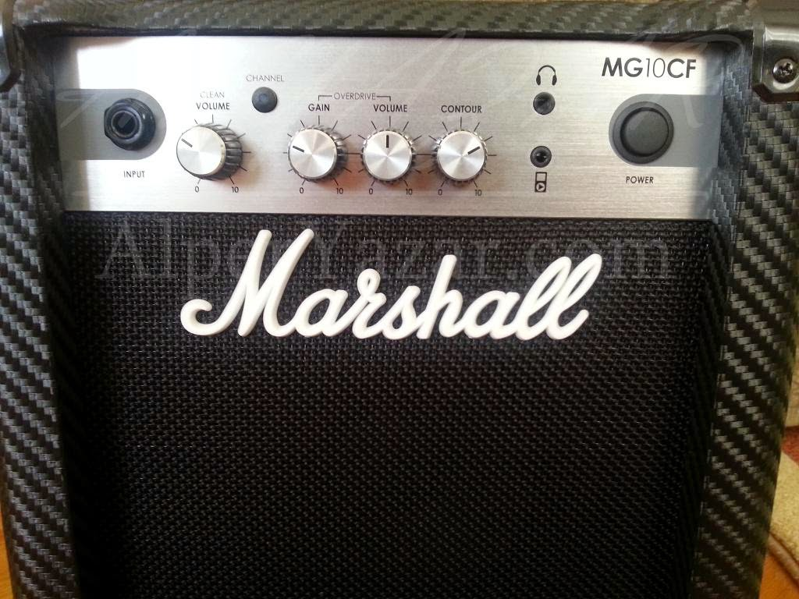
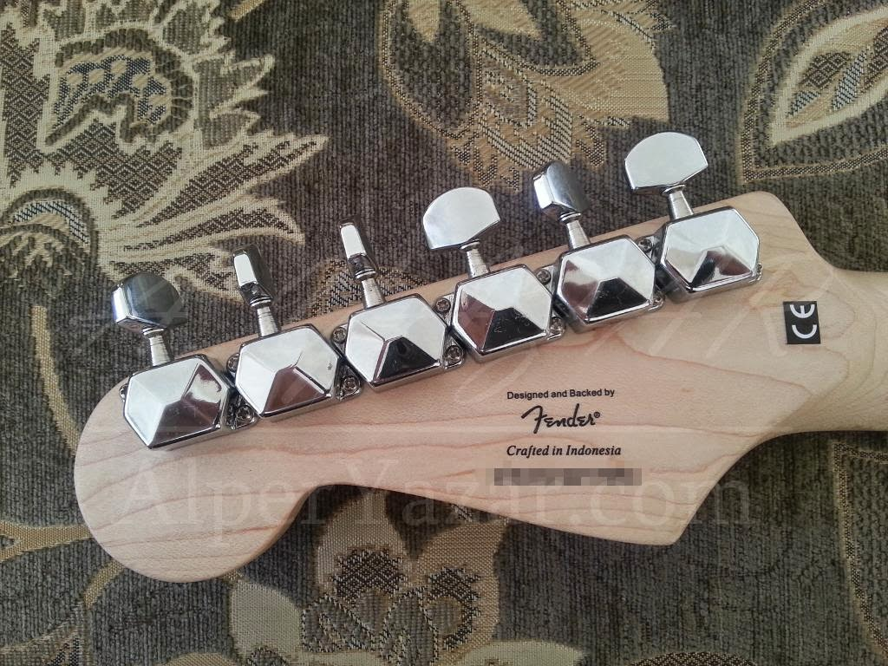
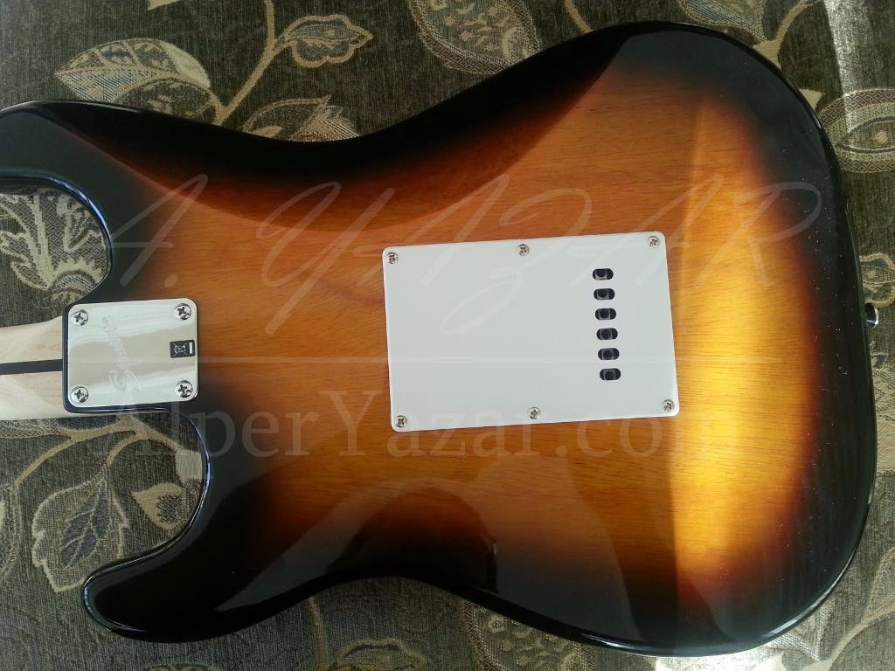

Yeni Enstrüman: Elektro Gitar + Amfi
Blogumun açıklamasında “Müzik” kelimesi geçse de bu konuyla ilgili bir yazı yazamamıştım, nihayet yazabiliyorum. Bu yazımda yeni heves ile aldığım elektro gitar ve gitar amfisi üzerine olacak. İlk gitar tecrübem olduğu için inceleme açısından bir yazı yazamıyorum, çünkü karşılaştırma yapabileceğim bir bilgi birikimim yok. Bu açıdan, yazının bir inceleme yazısı değil de bir tanıtım yazısı olacağını baştan belirteyim. Karar verme aşamasında iken düşündüğüm gitarlar ile ilgili fotoğraflar, bilgiler bulmak yararlı oluyordu, belki birileri de bu gitarı düşünüyorsa diye kısaca bir şeyler yazmak istedim.
İlk gitarımı “başlangıç gitarı” etiketi ile anılan bir gitar olan Squier Bullet Strat HSS Brown Sunburst modeli olarak seçtim. Squier, Fender firmasının “yan markası” diyebileceğimiz bir marka. İşçiliği, Fender’in aksine uzakdoğu ülkesinde yapılan bir marka. Örneğin bendeki gitar Endonezya’da üretilmiş. Squier’ın başka ülkede üretimi var mı bilmiyorum, hepsi buradan geliyor olabilir. Bullet, Squier’ın yeni başlayanlar için tasarlanmış olan gitarlarının olduğunu söylediği seri. Strat yani tam adıyla Stratocaster modeli Fender markasına ait 1954 yılında tasarlanmış model. Gitar çalmak ile ilgisi olmayan bir çok insanın bile elektro gitar görüntüsü olarak kafasında canlandırabileceği standart bir görünüş. HSS kısmı ise gitarda dilimizde “manyetik”, İngilizce de “pickup” olarak adı konulmuş tellerin titreşimini elektrik sinyaline çevirmeye yarayan (Elektro gitar mikrofonu diyebiliriz.) ekipmanların tiplerini belirtiyor. S harfi Single tip manyetik olduğunu belirtirken, H harfi ise Humbucker tip manyetik olduğunu belirtiyor. HSS harfleri ile de köprü (Bridge) kısmından perdelere doğru sırayla Humbucker, Single, Single tip manyetiklerin olduğunu belirtiyor. Brown Sunburst ise gövde renginin kaverengi tonlarında olduğunu bize söylüyor.

Squier Bullet Strat HSS Brown Sunburst
Seçim Sebebim
Piyasada bir çok gitar marka/modeli varken bu gitarı seçmemin kendimce birkaç sebebi var. Blues tonlarını seviyorum. Ayrıca çok sert olmayan Rock müziği ve bir de Surf müziği dinlemeyi severim. Bu açıdan Fender gitarların bu tarzlar için daha uygun olacağını öğrendim. Daha sert müzik seven kişilerin başka markalara yönelmesi daha doğru olabilir. Özellikle Surf müzikte de “vibrato” efektini yakalayabilmek için tremolo kolu (“Whammy bar” da deniyor.) olan bir gitar arıyordum. Daha sonraları da Fender gitarların fiyatlarına bakınca özellikle yeni başlangıç yapacak biri için biraz pahalı olduğunu fark edince Squier markasını buldum. :) Renk olarak da The Ventures’ın gitaristlerinden biri olan Gerry McGee abimizin bir konserinde çaldığı bu renk tonundaki Strat modelli gitari hoşuma gitmişti. Böylece renk kararımı da almış oldum. İlk olarak aklımda SSS (Single - Single - Single) modeli vardı.
Gitar bakmaya Bursa’daki Rekor Müzik’e gittiğimde (Bursa’yı bilenler için Setbaşı’nda olan) aynı gitarın hem SSS hem de HSS olan modelini gördüm ve kararım hızlı bir şekilde HSS’ye döndü. :) Humbucker manyetiğin de sesini merak ettiğimden bir adet de H manyetik olmasını istedim. Humbucker’ın adını veren özelliği olan daha az dip gürültü üretmesi ve daha yüksek seviyede ses üretmesi özelliğini de gözlemlemeyi planladım ve tercihimi HSS’den yana kullandım.
Yeri gelmişken bahsedeyim, gitar ile ilgili Gitar Teknikleri adında bir web sitesi var. Bu sitede gitar tanıtım, gitaristlerle röportaj vs. gibi konularda güzel videolar bulabilmek mümkün. Squier Bullet Strart’ın hem HSS hem de SSS ile ilgili Gitar Teknikleri tarafından hazırlanmış videoları kendi sitelerinde bulunuyor.
Tremolo Koluna Dikkat!
Gitarın yanında ayrıca bir poşet içinde tremolo kolu ve iki adet farklı alyan anahtar çıkıyor. Bunların biri tellerin yüksekliğini ayarlamak diğer ise sap yüksekliğini ayarlamak için. Aldığım yerde bu poşetler ile gitarlar ayrı duruyordu. Bu ekipmanları aldıktan sonra fark ettim ki tremolo kolu benim gitarımdaki yerine uymuyor. Daha sonradan gördüğüm üzere 3 farklı vida çapında tremolo kolu var. Eğer benim gibi gitarı kapalı kutudan değil de askıdan alıyorsanız tremoloyu da denemenizi tavsiye ederim. Gitarıma uyan tremolo kolunun fotoğrafını da koyuyorum.

Squier Bullet Strat Tremolo Kolu
Amfi (Amplifikatör)
Amfi konusunda da nerdeyse hiç araştırma yapmadan gitmiştim. Yeni başladığım için amfi karakteristiğidir, tonudur gibi şeyleri düşünmedim. Evden çıkmadan internette Fender Mini Tone Master isimli amfiyi gördüydüm. Daha sonra mağazadaki arkadaşın düşük güçlü deyip başka amfi tavsiye etmesi ve zaten bu konuda çok kararlı olmamam sebebiyle vazgeçtim. Bu arada bahsettiğim amfi sanırım 9V pil ile çalışıyor ve gücü 1W. İnternette adaptör girişi var yazıyor fakat sanırım içinden adaptör çıkmıyor. Bundan çok emin değilim. Eğer alırken adaptörü içinden çıkmıyorsa zaten almazdım, bir de adaptör aramak istemezdim. Neyse, sonunda Marshall MG10CF cihazını almış bulundum. Bu, 10W gücünde bir amfi. Gitar girişine ek olarak MP3 çalar girişi ve kulaklık çıkışı da bulunuyor. 220V fişi var. İsterseniz “overdrive” özelliğini de açabiliyorsunuz. Gitarın sesini biraz daha “kirli” yapmak mümkün. Başta çok kullanmayacakmışım gibi düşünsem de abartılmamış seviyede açılınca daha güzel bir ton yaratıyor gibi geliyor artık.

Marshall MG10CF Amfi
Birkaç fotoğraf koyarak yazıyı sonlandırıyorum. Son sözler olarak da enstrüman seçiminde gidip, yerinde görmenin önemli olduğunu düşünüyorum. Birçok gitarı veya diğer enstrümanları internetten satın alabilmek mümkün. Müzik ekipmanlarının bir kısmı bence de internetten alınabilir fakat enstrümanın ele alınıp denenmesi gerektiğini düşünüyorum. Hiç çalmayı bilmiyor olsanız bile enstrümanı ele alıp, hissetmek bence önemli. Ayrıca ufak tefek problemler olabiliyor. Siz bunu internetten aldıktan sonra fark ederseniz çalarken enstrümandan bir soğuma olabilir. Yani bir telin, bir perdeden çıkartacağı arızalı bir ses kafanızın sürekli oraya takılıp enstrümandan soğumanıza sebep olabilir. Bu açıdan mümkün olduğunca enstrüman alırken denenip, içe sindikten sonra alınması taraftarıyım.
Varsa konuyla ilgili sorularınızı ve yorumlarınızı duymak isterim. Başta da belirttiğim gibi ilk gitarım olduğu için karşılaştırma yapabilecek bir bilgi birikimim yok ama yardımcı olabileceğim konulardan soru gelirse cevaplayabilirim. :)
Herkese bol müzikli günler dileği ile…

Squier Bullet Strat serisi gitarın “Headstock” kısmının arkadan görüntüsü. Gitarın seri numarası ve üretim yeri burada yazıyor.

Squier Bullet Strat modelli gitarın gövdesinin arkası ve arkasındaki “Çöpe Atmayınız!” uyarısı.
Merak edenler için, beyaz kapağın altında tremolo sistemini tutan ve tremoloyu bıraktıktan sonra köprünün tekrar geri dönmesini sağlayan yay sistemi bulunuyor.